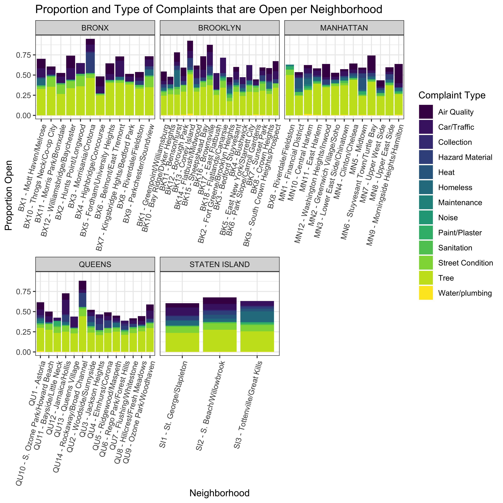
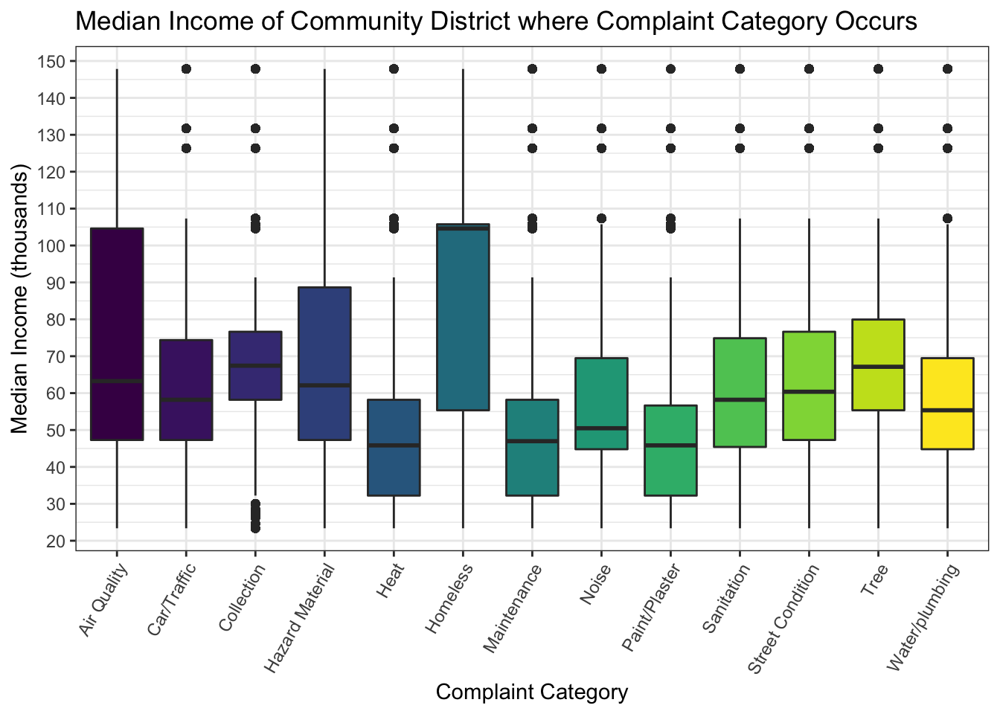
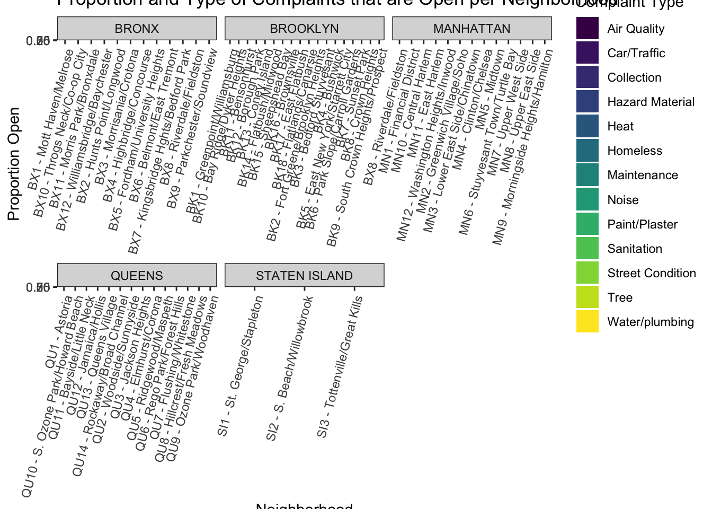
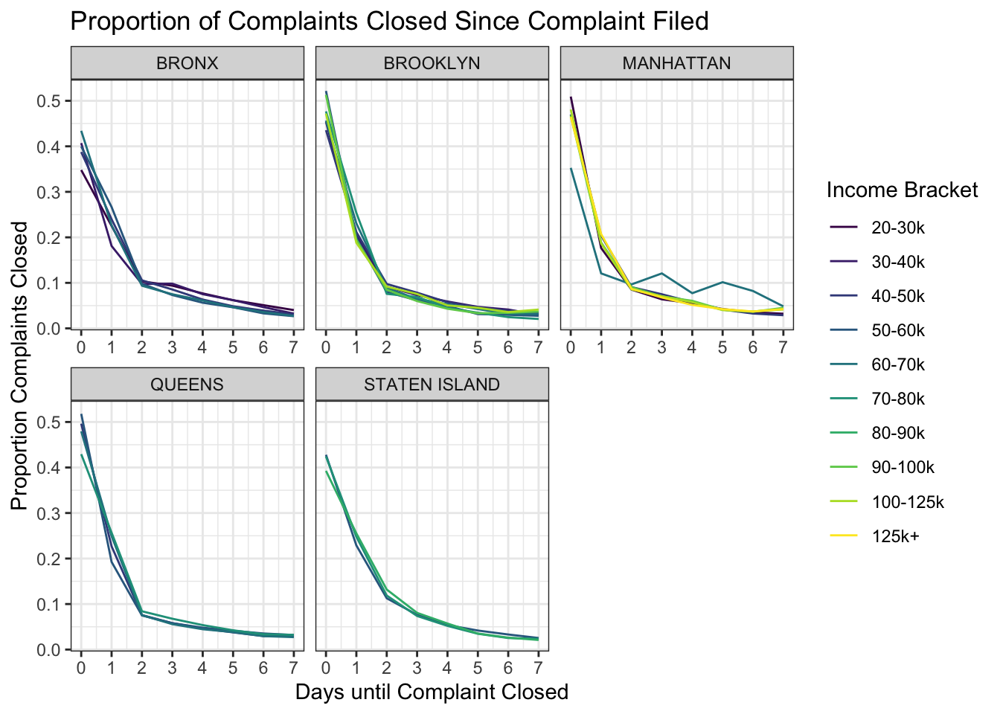

Descriptive Statistics Plots
Data
NYC 311
Load and tidy the data. Data is 100k randomly sampled complaints from all neighborhoods across all NYC boroughs (600k total samples). Years sampled were 2014-2018.
Data downloaded from: https://wetransfer.com/downloads/f8c5d6c17483e279ff56018db9c44cc420191201000026/c5f48b
nyc <- read_csv(file = "./p8105nyc_311_100k.csv") %>%
janitor::clean_names()
nyc_tidy <- nyc %>%
filter(borough != "Unspecified") %>%
separate(closed_date,
into = c("closed_month","closed_day","closed_year"),
sep = "\\/" ) %>%
separate(closed_year,
into = c("closed_year","closed_time"),
sep = " ") %>%
mutate(
created_year = as.numeric(created_year),
created_month = as.numeric(created_month),
created_day = as.numeric(created_day),
city = as.factor(city),
status = as.factor(status),
borough = as.factor(borough),
agency = as.factor(agency),
complaint_type = as.factor(complaint_type),
community_board = as.factor(community_board),
open_complaint = ifelse(status == "Closed", yes = 0, no = 1),
# open_complaint = ifelse(is.na(closed_year), yes = 1, no = 0),
complaint_simp = case_when(
str_detect(complaint_type,
regex("street", ignore_case = TRUE))
|str_detect(complaint_type,
regex("sidewalk", ignore_case = TRUE))
|str_detect(complaint_type,
regex("curb", ignore_case = TRUE)) ~ "Street Condition",
str_detect(complaint_type,
regex("noise", ignore_case = TRUE)) ~ "Noise",
str_detect(complaint_type,
regex("heat", ignore_case = TRUE)) ~ "Heat",
str_detect(complaint_type,
regex("water", ignore_case = TRUE))
|str_detect(complaint_type,
regex("leak", ignore_case = TRUE))
|str_detect(complaint_type,
regex("plumbing", ignore_case = TRUE))
|str_detect(complaint_type,
regex("boiler", ignore_case = TRUE)) ~ "Water/plumbing",
str_detect(complaint_type,
regex("paint", ignore_case = TRUE)) ~ "Paint/Plaster",
str_detect(complaint_type,
regex("asbestos", ignore_case = TRUE))
|str_detect(complaint_type,
regex("lead", ignore_case = TRUE))
|str_detect(complaint_type,
regex("hazard", ignore_case = TRUE))
|str_detect(complaint_type,
regex("mold", ignore_case = TRUE)) ~ "Hazard Material",
str_detect(complaint_type,
regex("elevator", ignore_case = TRUE))
|str_detect(complaint_type,
regex("maintenance", ignore_case = TRUE))
|str_detect(complaint_type,
regex("electric", ignore_case = TRUE))
|str_detect(complaint_type,
regex("stairs", ignore_case = TRUE))
|str_detect(complaint_type,
regex("window", ignore_case = TRUE))
|str_detect(complaint_type,
regex("appliance", ignore_case = TRUE)) ~ "Maintenance",
str_detect(complaint_type,
regex("sanita", ignore_case = TRUE))
|str_detect(complaint_type,
regex("rodent", ignore_case = TRUE))
|str_detect(complaint_type,
regex("dirty", ignore_case = TRUE))
|str_detect(complaint_type,
regex("sew", ignore_case = TRUE))
|str_detect(complaint_type,
regex("standing water", ignore_case = TRUE)) ~ "Sanitation",
str_detect(complaint_type,
regex("tree", ignore_case = TRUE)) ~ "Tree",
str_detect(complaint_type,
regex("parking", ignore_case = TRUE))
|str_detect(complaint_type,
regex("car", ignore_case = TRUE))
|str_detect(complaint_type,
regex("drive", ignore_case = TRUE))
|str_detect(complaint_type,
regex("vehicle", ignore_case = TRUE))
|str_detect(complaint_type,
regex("traffic", ignore_case = TRUE)) ~ "Car/Traffic",
str_detect(complaint_type,
regex("air", ignore_case = TRUE)) ~ "Air Quality",
str_detect(complaint_type,
regex("collection", ignore_case = TRUE)) ~ "Collection",
str_detect(complaint_type,
regex("homeless", ignore_case = TRUE))
|str_detect(complaint_type,
regex("panhandling", ignore_case = TRUE)) ~ "Homeless"),
health_complaint = ifelse(
complaint_simp %in% c("Heat", "Water/Plumbing", "Hazard Material", "Sanitation", "Air Quality"), yes = 1, no = 0),
complaint_simp = as.factor(complaint_simp),
open_health_complaint = case_when(
open_complaint == 1 & health_complaint == 1 ~ 1,
open_complaint == 0 | health_complaint == 0 ~ 0
),
# openCorr = ifelse(status == "Closed", yes = 0, no = 1),
status = as.factor(status)
)Used skimr::skim, colnames, and levels(factor(nyc$complaint_type)) to investigate and tidy the data. New variables were created to establish a binary status for closed (0) or open (1) complaints.
Key variables include: year, borough, community_board, complaint_type, and status.
Newly added variables include:
complaint_simp- based on key words, condenses complaint types into the following categories: Air Quality, Car/Traffic, Collection, Hazard Material, Heat, Homeless, Maintenance, Noise, Paint/Plaster, Sanitation, Street Condition, Tree, and Water/plumbing.health_complaint- binary yes (1) or no (0), based on health associated categories withincomplaint_simp.open_health_complaint- binary categorization, either health complaint that is open (1), or non-health related complaint or closed health complaint (0).open_complaint- binary categorization, closedstatus(0), open (1).
Income and population characteristics data:
The variable, community_board, will be used to left join NYC 311 data with income and population characteristics data sourced from American Community Survey by Community District.
inc_df = read_csv("./Med_income_2017.csv") %>%
janitor::clean_names() %>%
mutate(
inc_1000s = round(median_income/1000, 1),
income_bracket = case_when(
median_income >= 20000 & median_income <= 30000 ~ "20-30k",
median_income > 30000 & median_income <= 40000 ~ "30-40k",
median_income > 40000 & median_income <= 50000 ~ "40-50k",
median_income > 50000 & median_income <= 60000 ~ "50-60k",
median_income > 60000 & median_income <= 70000 ~ "60-70k",
median_income > 70000 & median_income <= 80000 ~ "70-80k",
median_income > 80000 & median_income <= 90000 ~ "80-90k",
median_income > 90000 & median_income <= 100000 ~ "90-100k",
median_income > 100000 & median_income <= 125000 ~ "100-125k",
median_income > 125000 & median_income <= 150000 ~ "125k+",
),
income_bracket = as.factor(income_bracket),
income_bracket = fct_relevel(income_bracket, c("20-30k", "30-40k", "40-50k", "50-60k", "60-70k", "70-80k", "80-90k", "90-100k", "100-125k", "125k+"))
)## Parsed with column specification:
## cols(
## MapID = col_double(),
## `Area Name` = col_character(),
## Median_Income = col_double(),
## community_board = col_character(),
## per_blackNH = col_double(),
## per_whiteNH = col_double(),
## per_hisp = col_double(),
## per_other = col_double(),
## `Total Population` = col_double()
## )nyc_inc = left_join(nyc_tidy, inc_df, by = "community_board")## Warning: Column `community_board` joining factor and character vector,
## coercing into character vectorincome_bracket and inc_1000s (rounds income and divides by 1000) variables were added to the neighborhood population characteristics data to ease downstream plots and analyses. The data were left joined using the community_board variable.
<<< STOP DATA TIDYING COPYING HERE >>>
Combined and tidied data for plotting
nyc_plots <- nyc_inc %>%
select(-unique_key, -city, -park_borough, -agency, -agency_name, -descriptor, -incident_zip, -incident_address, -street_name, -cross_street_1, -cross_street_2, -intersection_street_1, -intersection_street_2, -landmark, -facility_type, -resolution_description, -resolution_action_updated_date, -bbl, -x_coordinate_state_plane, -y_coordinate_state_plane, -open_data_channel_type, -park_facility_name, -vehicle_type, -taxi_company_borough, -taxi_pick_up_location, -bridge_highway_name, -bridge_highway_direction, -bridge_highway_segment, -latitude, -longitude, -location, -road_ramp, -location_type, -address_type, -map_id)
# for days to close calculation:
nyc_plots %>%
filter(status == "Closed") %>%
mutate(closed_year = as.numeric(closed_year),
closed_month = as.numeric(closed_month),
closed_day = as.numeric(closed_day)) %>%
filter(closed_year != 2047) %>%
mutate(diff_year = abs(closed_year - created_year),
diff_month = abs(closed_month - created_month),
diff_day = abs(closed_day - created_day),
diff_dayt = abs(diff_year*365 + diff_month*30 + diff_day))## # A tibble: 479,689 x 30
## created_month created_day created_year created_time closed_month
## <dbl> <dbl> <dbl> <time> <dbl>
## 1 6 18 2016 06:42:00 6
## 2 10 18 2017 04:15:02 10
## 3 11 7 2018 07:39:00 11
## 4 10 3 2015 11:28:42 10
## 5 11 27 2015 10:58:11 11
## 6 4 10 2014 12:00:00 4
## 7 8 30 2016 11:06:20 9
## 8 11 1 2014 02:41:40 11
## 9 3 8 2016 10:06:05 3
## 10 5 14 2016 08:36:23 5
## # … with 479,679 more rows, and 25 more variables: closed_day <dbl>,
## # closed_year <dbl>, closed_time <chr>, complaint_type <fct>,
## # status <fct>, due_date <chr>, community_board <chr>, borough <fct>,
## # open_complaint <dbl>, complaint_simp <fct>, health_complaint <dbl>,
## # open_health_complaint <dbl>, area_name <chr>, median_income <dbl>,
## # per_black_nh <dbl>, per_white_nh <dbl>, per_hisp <dbl>,
## # per_other <dbl>, total_population <dbl>, inc_1000s <dbl>,
## # income_bracket <fct>, diff_year <dbl>, diff_month <dbl>,
## # diff_day <dbl>, diff_dayt <dbl>THIS IS NOT TRUE DO NOT INCLUDE:
The newly combined dataframe was grouped according to area_name, a key variable from the population characteristics dataset that provides the local neighborhood name within the borough. Extraneous variables were removed to reduce the dataframe size and ease manipulation of the data.
Newly added variables include:
number_complaints- total number of complaints within the given neighborhood the complaint was filed.num_unsolved- total number of open/unresolved complaints within the neighborhood the complaint was filed.num_health_complaint- total number of health related complaints within the neighborhood the complaint was filed.num_open_health- total number of open/unresolved health complaints within the neighborhood the complaint was filed.
Plots
Total number of complaints by income bracket
# nyc_plots %>%
# filter(!is.na(income_bracket)) %>%
# group_by(income_bracket) %>%
# summarize(n = n(),
# proportion = n/nrow(nyc_plots)) %>%
# ggplot(aes(x = income_bracket, y = proportion)) +
# geom_col() +
# ylab("Proportion of Total Complaints") +
# ggtitle("Relative Number of Complaints Filed from Each Income Bracket")
nyc_plots %>%
filter(!is.na(income_bracket)) %>%
group_by(income_bracket, borough) %>%
summarize(n = n(),
proportion = n/nrow(nyc_plots)) %>%
ggplot(aes(x = income_bracket, y = proportion, fill = income_bracket)) +
geom_col() +
ylab("Proportion") +
xlab("Income Bracket") +
ggtitle("Proportion of Total Complaints from Each Income Bracket") +
facet_wrap(~borough, scales = "free_x") +
theme(axis.text.x = element_text(angle = 60, hjust = 1))
Middle class income groups proportionally file the most complaints across all income brackets. The only exception is the Bronx, in which the proportion of 311 complaints is higher in the lowest income group.
Proportion of unsolved cases by income bracket
Proportion open:
p <- nyc_plots %>%
filter(!is.na(income_bracket)) %>%
group_by(income_bracket, borough, open_complaint) %>%
summarize(n = n()) %>%
pivot_wider(names_from = open_complaint, values_from = n) %>%
rename(closed = '0',
open = '1')
p %>% mutate(proportion = (open/closed)) %>%
ggplot(aes(x = income_bracket, y = proportion, fill = income_bracket)) +
geom_col() +
facet_wrap(~borough, scales = "free_x") +
ggtitle("Proportion of Open Cases Within Each Income Bracket") +
xlab("Income Bracket") +
ylab("Proportion Open") +
theme(axis.text.x = element_text(angle = 60, hjust = 1))
Total Health related complaints broken down by income bracket
nyc_plots %>%
filter(!is.na(income_bracket)) %>%
group_by(income_bracket, borough, health_complaint) %>%
summarize(n = n(),
proportion = n/nrow(nyc_plots)) %>%
ggplot(aes(x = income_bracket, y = proportion, fill = income_bracket)) +
geom_col() +
ylab("Proportion") +
xlab("Income Bracket") +
ggtitle("Proportion of Total Complaints from Each Income Bracket") +
facet_wrap(~borough, scales = "free_x") +
theme(axis.text.x = element_text(angle = 60, hjust = 1))
Proportion Health related complaints open broken down by income bracket:
h <- nyc_plots %>%
filter(!is.na(income_bracket),
health_complaint == 1) %>%
group_by(income_bracket, borough, open_complaint) %>%
summarize(n = n()) %>%
pivot_wider(names_from = open_complaint, values_from = n) %>%
rename(closed = '0',
open = '1')
h %>% mutate(proportion = (open/closed)) %>%
ggplot(aes(x = income_bracket, y = proportion, fill = income_bracket)) +
geom_col() +
facet_wrap(~borough, scales = "free_x") +
ggtitle("Proportion of Health Related Open Cases Within Each Income Bracket") +
xlab("Income Bracket") +
ylab("Proportion Open") +
theme(axis.text.x = element_text(angle = 60, hjust = 1))## Warning: Removed 1 rows containing missing values (position_stack).
Median income of each complaint category:
nyc_plots %>%
filter(!is.na(median_income),
!is.na(complaint_simp)) %>%
mutate(complaint_simp = fct_reorder(complaint_simp, median_income)) %>%
ggplot(aes(x = complaint_simp,
y = (median_income/1000),
fill = complaint_simp)) +
geom_boxplot() +
theme(axis.text.x = element_text(angle = 60, hjust = 1),
legend.position = "none") +
scale_y_continuous(breaks = scales::pretty_breaks(n = 10)) +
ylab("Median Income (thousands)") +
xlab("Complaint Category") +
ggtitle("Median Income of Community District where Complaint Category Occurs")
# open cases:
nyc_plots %>%
filter(!is.na(median_income),
!is.na(complaint_simp),
open_complaint == 1) %>%
ggplot(aes(x = complaint_simp,
y = (median_income/1000),
fill = complaint_simp)) +
geom_boxplot() +
theme(axis.text.x = element_text(angle = 60, hjust = 1),
legend.position = "none") +
scale_y_continuous(breaks = scales::pretty_breaks(n = 10)) +
ylab("Median Income (thousands)") +
xlab("Complaint Category") +
ggtitle("Median Income of Community District where Open Complaint Category Occurs")
Total number of health complaints filed per neighborhood
nyc_plots %>%
select(area_name, borough, open_complaint, health_complaint, open_health_complaint) %>%
group_by(area_name, borough, health_complaint) %>%
summarize(n = n()) %>%
pivot_wider(names_from = health_complaint, values_from = n) %>%
rename(closed = `0`,
open = `1`) %>%
mutate(total_health = (open + closed),
proportion = open/(open + closed)) %>%
filter(!is.na(area_name), !is.na(total_health)) %>%
ggplot(aes(x = area_name, y = total_health, fill = borough)) +
geom_col() +
facet_wrap(~borough, scales = "free_x") +
theme(axis.text.x = element_text(angle = 75, hjust = 1)) +
xlab("Neighborhood") +
ylab("Total Number of Health Complaints") +
ggtitle("Total Number of Health Complaints Filed per Neighborhood") +
theme(legend.position = "none") +
scale_fill_viridis(discrete = TRUE)
Not to be included:
Total complaints within each neighborhood of each borough:
nyc_plots %>%
filter(!is.na(area_name)) %>%
group_by(area_name, borough) %>%
summarize(n = n()) %>%
ggplot(aes(x = area_name, y = n)) +
geom_col() +
ylab("Total Complaints") +
xlab("Neighborhood") +
theme(axis.text.x = element_text(angle = 60, hjust = 1)) +
ggtitle("Complaints by Neighborhood") +
facet_wrap(~borough, scales = "free_x")nyc_plots %>%
filter(!is.na(community_board)) %>%
group_by(community_board, borough) %>%
summarize(n = n()) %>%
filter(n > 100) %>%
ggplot(aes(x = community_board, y = n)) +
geom_col() +
ylab("Total Complaints") +
xlab("Community Board") +
theme(axis.text.x = element_text(angle = 60, hjust = 1)) +
ggtitle("Complaints by Community Board") +
facet_wrap(~borough, scales = "free_x")
other med income plot:
#
# nyc_plots %>%
# filter(!is.na(income_bracket),
# !is.na(complaint_simp)) %>%
# group_by(income_bracket, borough, complaint_simp) %>%
# summarize(n = n()) %>%
# mutate(proportion = n/nrow(nyc_plots)) %>%
# arrange(income_bracket, proportion) %>%
# mutate(order = row_number()) %>%
# group_by(complaint_simp) %>%
# ggplot(aes(x = complaint_simp, y = proportion, fill = complaint_simp)) +
# geom_col() +
# facet_wrap(~income_bracket, scales = "free_x", ncol = 5) +
# theme(axis.text.x = element_text(angle = 75, hjust = 1))
#
#
# complaint_simp = fct_reorder(complaint_simp,
# proportion,
# .desc = TRUE)) %>% density plot of number of days to close by income group or pop proportions?
nyc_plots %>%
filter(status == "Closed") %>%
mutate(closed_year = as.numeric(closed_year),
closed_month = as.numeric(closed_month),
closed_day = as.numeric(closed_day)) %>%
filter(closed_year != 2047) %>%
mutate(diff_year = abs(closed_year - created_year),
diff_month = abs(closed_month - created_month),
diff_day = abs(closed_day - created_day),
diff_dayt = abs(diff_year*365 + diff_month*30 + diff_day)) %>%
select(income_bracket,
median_income,
borough,
diff_dayt,
diff_year,
diff_month,
diff_day) %>%
filter(diff_dayt < 10,
!is.na(income_bracket)) %>%
group_by(borough, income_bracket, diff_dayt) %>%
summarize(n = n()) %>%
ggplot(aes(x = diff_dayt, y = n, group = income_bracket, color = income_bracket)) +
geom_line() +
facet_wrap(~borough)# sum total of income by borough
#
# nyc_plots %>%
# filter(status == "Closed") %>%
# mutate(closed_year = as.numeric(closed_year),
# closed_month = as.numeric(closed_month),
# closed_day = as.numeric(closed_day)) %>%
# filter(closed_year != 2047) %>%
# mutate(diff_year = abs(closed_year - created_year),
# diff_month = abs(closed_month - created_month),
# diff_day = abs(closed_day - created_day),
# diff_dayt = abs(diff_year*365 + diff_month*30 + diff_day)) %>%
# select(per_black_nh:per_other,
# area_name,
# created_year,
# borough,
# diff_dayt) %>%
# filter(diff_dayt < 10) %>%
# pivot_longer(cols = per_black_nh:per_other, names_to = "race", values_to = "percent_pop") %>%
# filter(!is.na(race),
# !is.na(percent_pop),
# !is.na(diff_dayt)) %>%
# ggplot(aes(x = race, y = diff_dayt, color = race)) +
# geom_boxplot()
#
#
# d <- nyc_plots %>%
# filter(status == "Closed") %>%
# mutate(closed_year = as.numeric(closed_year),
# closed_month = as.numeric(closed_month),
# closed_day = as.numeric(closed_day)) %>%
# filter(closed_year != 2047) %>%
# mutate(diff_year = abs(closed_year - created_year),
# diff_month = abs(closed_month - created_month),
# diff_day = abs(closed_day - created_day),
# diff_dayt = abs(diff_year*365 + diff_month*30 + diff_day)) %>%
# select(per_black_nh:per_other, diff_dayt, borough, area_name, created_year) %>%
# pivot_longer(cols = per_black_nh:per_other, names_to = "race", values_to = "percent_pop") %>%
# filter(!is.na(race),
# !is.na(percent_pop),
# !is.na(diff_dayt)) %>%
# group_by(race, borough, percent_pop, diff_dayt) %>%
# summarize(n = n())
#
#
# d %>% ggplot(aes(x = percent_pop, y = diff_dayt, group = race, color = race)) +
# geom_line() +
# facet_wrap(~borough)Final Plots:
Intro plots
Proportion open complaints per neighborhood
We first wanted to consider if there were differences in the number, type, or status of complaints across each neighborhood.
nyc_plots %>%
select(area_name, borough, complaint_simp, open_complaint) %>%
group_by(area_name, borough, complaint_simp, open_complaint) %>%
summarize(n = n()) %>%
pivot_wider(names_from = open_complaint, values_from = n) %>%
rename(closed = `0`,
open = `1`) %>%
mutate(proportion_open = open/(open + closed),
total = (open + closed)) %>%
filter(!is.na(area_name), !is.na(total), !is.na(complaint_simp)) %>%
ggplot(aes(x = area_name, y = total, fill = complaint_simp)) +
geom_col() +
facet_wrap(~borough, scales = "free_x") +
theme(axis.text.x = element_text(angle = 75, hjust = 1)) +
xlab("Neighborhood") +
ggtitle("Total and Type of Complaints Across Neighborhoods") +
ylab("Total Complaints") +
labs(fill = "Complaint Type") +
scale_fill_viridis(discrete = TRUE)## Warning: Factor `complaint_simp` contains implicit NA, consider using
## `forcats::fct_explicit_na`
## Warning: Factor `complaint_simp` contains implicit NA, consider using
## `forcats::fct_explicit_na`
## Warning: Factor `complaint_simp` contains implicit NA, consider using
## `forcats::fct_explicit_na`
## Warning: Factor `complaint_simp` contains implicit NA, consider using
## `forcats::fct_explicit_na`
Looking at the total and type of complaint shows Inwood/Washington Heights to have a much greater number of complaints compared to the rest of Manhattan, many of which are related to Noise, Heat, Water/Plumbing, and Trees (possibly because of Inwood Park). Many more complaints are made in the “safer” area of the Bronx near the VA hospital, Fordham University, and Van Cortland Park (Highbridge/Concourse, Fordham/University Heights, Kingsbridge Heights/Bedford Park). More complaints are raised in St. George/Stapleton in Staten Island than other areas because it is a more populated area of the island in addition to being the more affluent area of the island.
We next considered how many of the total complaints in each neighborhood have been closed.
nyc_plots %>%
select(area_name, borough, complaint_simp, open_complaint) %>%
group_by(area_name, borough, complaint_simp, open_complaint) %>%
summarize(n = n()) %>%
pivot_wider(names_from = open_complaint, values_from = n) %>%
rename(closed = `0`,
open = `1`) %>%
mutate(proportion_open = open/(open + closed)) %>%
filter(!is.na(area_name), !is.na(proportion_open), !is.na(complaint_simp)) %>%
ggplot(aes(x = area_name, y = proportion_open, fill = complaint_simp)) +
geom_col() +
facet_wrap(~borough, scales = "free_x") +
theme(axis.text.x = element_text(angle = 75, hjust = 1)) +
xlab("Neighborhood") +
ggtitle("Proportion and Type of Complaints that are Open per Neighborhood") +
ylab("Proportion Open") +
labs(fill = "Complaint Type") +
scale_fill_viridis(discrete = TRUE)## Warning: Factor `complaint_simp` contains implicit NA, consider using
## `forcats::fct_explicit_na`
## Warning: Factor `complaint_simp` contains implicit NA, consider using
## `forcats::fct_explicit_na`
## Warning: Factor `complaint_simp` contains implicit NA, consider using
## `forcats::fct_explicit_na`
## Warning: Factor `complaint_simp` contains implicit NA, consider using
## `forcats::fct_explicit_na`
The above plot demonstrates that the highest proportion of open cases are complaints involving a tree. Air Quality and Car/Traffic are also addressed less than other complaints across all neighborhoods. Notably, Hazard Material complaints remain unaddressed in Morrisania/Crotona, Rockaway/Broad Channel and Coney Island. Depending on the neighborhood, Homeless complaints are typically left open.
Proportion of open complaints by income bracket
Because we saw a difference in the number of complaints and open complaints across each neighborhood, we wanted to understand how complaints are distributed based on income_bracket.
p <- nyc_plots %>%
filter(!is.na(income_bracket)) %>%
group_by(income_bracket, borough, open_complaint) %>%
summarize(n = n()) %>%
pivot_wider(names_from = open_complaint, values_from = n) %>%
rename(closed = '0',
open = '1')
p %>% mutate(proportion = (open/(open + closed))) %>%
ggplot(aes(x = income_bracket, y = proportion, fill = income_bracket)) +
geom_col() +
facet_wrap(~borough, scales = "free_x") +
ggtitle("Proportion of Open Cases Within Each Income Bracket") +
xlab("Income Bracket") +
ylab("Proportion Open") +
theme(axis.text.x = element_text(angle = 60, hjust = 1)) +
scale_fill_viridis(discrete = TRUE) +
labs(fill = "Income Bracket")
Surprisingly, across all boroughs (except Brooklyn) the proportion of open cases is greater in higher income groups compared to lower income groups.
We found the total number of cases per income bracket reflected the economic distribution of each neighborhood and was not informative as to which group filed the most complaints. As such, we did not include this plot.
Proportion of health related complaints by each income category:
Even though total complaint number was uninformative, we wanted to understand if a type of complaint was more prevalent within an income bracket. The following is a plot of the proportion of health related complaints (which includes: Air Quality, Heat, Hazard Material, Sanitation, and Water/Plumbing) out of all complaints filed.
h <- nyc_plots %>%
filter(!is.na(income_bracket)) %>%
group_by(income_bracket, borough, health_complaint) %>%
summarize(n = n()) %>%
pivot_wider(names_from = health_complaint, values_from = n) %>%
rename(other = '0',
health_related = '1')
h %>% mutate(proportion = (health_related/(health_related + other))) %>%
ggplot(aes(x = income_bracket, y = proportion, fill = income_bracket)) +
geom_col() +
facet_wrap(~borough, scales = "free_x") +
ggtitle("Proportion of Health Related Complaints Within Each Income Bracket") +
xlab("Income Bracket") +
ylab("Proportion Health Related") +
labs(fill = "Income Bracket") +
theme(axis.text.x = element_text(angle = 60, hjust = 1)) +
scale_fill_viridis(discrete = TRUE)
It is apparent that health related complaints are proportionally higher in lower income groups across all boroughs of NYC.
Income across complaint categories
Median income of each complaint category:
Given the difference in the proportion of health complaints across income brackets, we wanted to further investigate what incomes are associated with a given complaint.
nyc_plots %>%
filter(!is.na(median_income),
!is.na(complaint_simp)) %>%
# mutate(complaint_simp = fct_reorder(complaint_simp, median_income)) %>%
ggplot(aes(x = complaint_simp,
y = (median_income/1000),
fill = complaint_simp)) +
geom_boxplot() +
theme(axis.text.x = element_text(angle = 60, hjust = 1),
legend.position = "none") +
scale_y_continuous(breaks = scales::pretty_breaks(n = 10)) +
ylab("Median Income (thousands)") +
xlab("Complaint Category") +
ggtitle("Median Income of Community District where Complaint Category Occurs") +
scale_fill_viridis(discrete = TRUE)
This plot demonstrates that neighborhoods with higher median incomes file more complaints relating to Homeless. Neighborhoods with lower median incomes file more complaints related to Heat, Maintenance, and Paint/Plaster.
Status of complaints given race or income level
Open status given Community District Population
One initial question we wanted to address was whether or not the status of complaints was more readily addressed given population characteristics of a neighborhood.
The following is a plot of the proportion of cases that are open given the racial percentage of a community district.
r <- nyc_plots %>%
pivot_longer(cols = per_black_nh:per_other, names_to = "race", values_to = "percent_pop") %>%
filter(!is.na(race),
!is.na(percent_pop)) %>%
group_by(race, borough, percent_pop, open_complaint) %>%
summarize(n = n()) %>%
pivot_wider(names_from = open_complaint, values_from = n) %>%
rename(closed = '0',
open = '1')
r %>% mutate(proportion = (open/(open + closed))) %>%
ggplot(aes(x = percent_pop, y = proportion, color = race)) +
geom_point() +
geom_smooth(se = FALSE) +
xlab("Percentage of Community District Population") +
ylab("Proportion Open") +
ggtitle("Unresolved Complaints as a Function of Neighborhood Population") +
scale_color_viridis(name = "Race", labels = c("Black", "Hispanic", "Other", "White"), discrete = TRUE)## `geom_smooth()` using method = 'loess' and formula 'y ~ x'
The only trend we were able to discern is a decrease is the proportion of open cases as the percent hispanic population increases.
Days to close given income level
We were also curious whether the income bracket of a neighborhood affected the number of days until a complaint was closed.
nyc_plots %>%
filter(status == "Closed") %>%
mutate(closed_year = as.numeric(closed_year),
closed_month = as.numeric(closed_month),
closed_day = as.numeric(closed_day)) %>%
filter(closed_year != 2047) %>%
mutate(diff_year = abs(closed_year - created_year),
diff_month = abs(closed_month - created_month),
diff_day = abs(closed_day - created_day),
diff_dayt = abs(diff_year*365 + diff_month*30 + diff_day)) %>%
select(income_bracket,
median_income,
borough,
diff_dayt,
diff_year,
diff_month,
diff_day) %>%
filter(diff_dayt <= 7,
!is.na(income_bracket)) %>%
group_by(borough, income_bracket, diff_dayt) %>%
summarize(n = n()) %>%
ggplot(aes(x = diff_dayt, y = n, group = income_bracket, color = income_bracket)) +
geom_line() +
facet_wrap(~borough, scales = "free_x") +
scale_x_continuous(breaks = scales::pretty_breaks(n = 7)) +
scale_color_viridis(discrete = TRUE) +
xlab("Days until Complaint Closed") +
ylab("Total Complaints Closed") +
ggtitle("Number of Complaints Closed Since Complaint Filed") +
labs(color = "Income Bracket")
Looking at the total number of complaints largely reflects a difference in the total number of complaints filed by each group. We then looked at the proportion of complaints closed per day within an income bracket.
d <- nyc_plots %>%
filter(status == "Closed") %>%
mutate(closed_year = as.numeric(closed_year),
closed_month = as.numeric(closed_month),
closed_day = as.numeric(closed_day)) %>%
filter(closed_year != 2047) %>%
mutate(diff_year = abs(closed_year - created_year),
diff_month = abs(closed_month - created_month),
diff_day = abs(closed_day - created_day),
diff_dayt = abs(diff_year*365 + diff_month*30 + diff_day)) %>%
select(income_bracket,
median_income,
borough,
diff_dayt,
diff_year,
diff_month,
diff_day) %>%
filter(diff_dayt <= 7,
!is.na(income_bracket)) %>%
group_by(borough, income_bracket, diff_dayt) %>%
summarize(n = n()) %>%
pivot_wider(names_from = diff_dayt, values_from = n) %>%
rename(day0 = `0`,
day1 = `1`,
day2 = `2`,
day3 = `3`,
day4 = `4`,
day5 = `5`,
day6 = `6`,
day7 = `7`)
d$total <- d %>%
ungroup() %>%
select(starts_with("day")) %>%
rowSums(.)
d %>%
pivot_longer(cols = day0:day7, names_to = "day", values_to = "day_total") %>%
mutate(day = recode(day, day0 = 0, day1 = 1, day2 = 2, day3 = 3, day4 = 4, day5 = 5, day6 = 6, day7 = 7),
proportion = day_total/total) %>%
ggplot(aes(x = day, y = proportion, group = income_bracket, color = income_bracket)) +
geom_line() +
facet_wrap(~borough, scales = "free_x") +
scale_x_continuous(breaks = scales::pretty_breaks(n = 7)) +
scale_color_viridis(discrete = TRUE) +
xlab("Days until Complaint Closed") +
ylab("Proportion Complaints Closed") +
ggtitle("Proportion of Complaints Closed Since Complaint Filed") +
labs(color = "Income Bracket")
This revealed no difference in the number of days to close a complaint given the income bracket of a neighborhood.